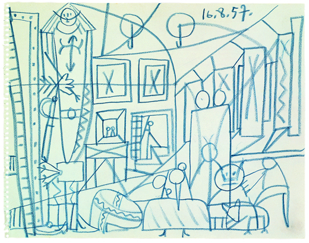

Explorar soluciones
Experiencia de Usuario en Aplicaciones Móviles
Explorar soluciones:
Sketching
Sketching
Expreesar ideas rápidamente
Propósito del sketching
Pensar en el problema
Boceto de Picasso para su versión de Las Meninas
Documentar diseño e interacción
Diseños de Jayse Hansen para el HUD de Ironman en Los Vengadores
Creating the Iron Man HUD for Marvel's The Avengers from Kathy Charneco on Vimeo.
Experimentar
Boceto de Jack Dorsey sobre su idea que se convertiría en Twitter
Explicar y comunicar soluciones y decisiones
Boceto de activistas de Greenpeace para coordinar un plan.
Equivocarse rápido
Encontrar el diseño correcto
Elementos básicos
Sketch Basics from konigi on Vimeo.
Texto

Widgets
Cajas y sombras

Interacción (secuencia)

Interacción (superpuesto)
Distintos niveles de fidelidad
Herramientas básicas
Plantillas
Dispositivo
En digital

Tableta de dibujo + MyPaint

Ventajas de MyPaint:
- Lienzo infinito. Puedes extender el dbujo hacia cualquier lado.
- Gran variedad de tipos de trazo.
- Soporte a capas. Puedes separar dibujo, texto, y sombreado.
- UI limpia. Posibilidad de ocultar UI y trabajar a toda pantalla.
- Permite slavar borradores rápidamente para mantener estados intermedios.
El proceso de sketching

Primero cantidad, después calidad
La primera idea no siempre es la mejor
Marcos conceptuales
Marcos conceptuales 1D
Marcos conceptuales 2D
Marcos conceptuales NxN
Iterar rápido
- 6-8 conceptos
- en 5 minutos
Revisar los diseños y obtener feedback

- Presentar los objetivos del diseño y los conceptos.
- El esto debe aportar 2-3 cosas que funcionan y 1-2 que no consiguen cumplir los objetivos o que querrían ver con más detalle en la siguiente iteración.
Actividad: Sketching 6-8-5
Comunicar experiencias más allá de la UI

Comics


Material relacionado
Libros
Sketching user experiences
Bill Buxton
The back of the napkin
Comunicación visual
See what I mean
Understanding comics
Scott McCloud